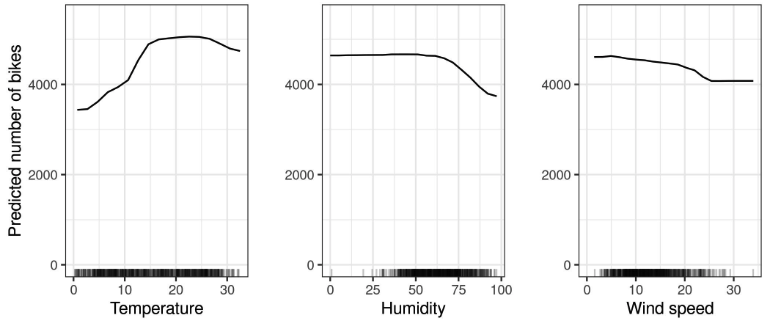
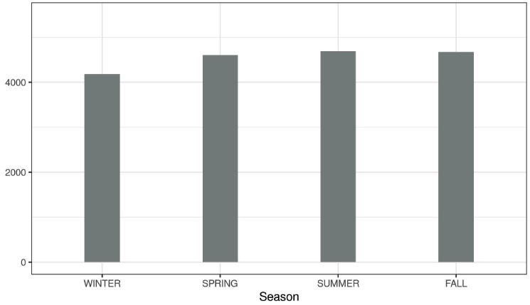
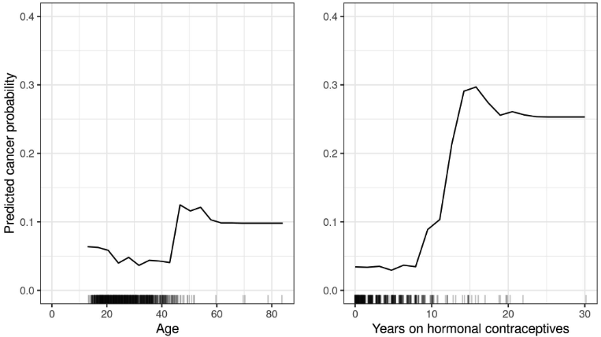
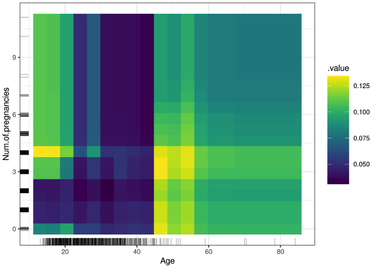

8.1 - Diagramme de dépendance partielle (PDP)
Le tracé de dépendance partielle (court PDP ou PD plot) montre l’effet marginal d’une ou deux caractéristiques sur le résultat prédit d’un modèle d’apprentissage automatique (JH Friedman 20011). Un diagramme de dépendance partielle peut montrer si la relation entre la cible et une entité est linéaire, monotone ou plus complexe. Par exemple, lorsqu’ils sont appliqués à un modèle de régression linéaire, les diagrammes de dépendance partielle montrent toujours une relation linéaire.
La fonction de dépendance partielle pour la régression est définie comme :
\[\hat{f}_S(x_S)=E_{X_C}\left[\hat{f}(x_S,X_C)\right]=\int\hat{f}(x_S,X_C)d\mathbb{P}(X_C)\]
Le \(x_S\) sont les caractéristiques pour lesquelles la fonction de dépendance partielle doit être tracée et \(X_C\) sont les autres fonctionnalités utilisées dans le modèle d’apprentissage automatique \(\hat{f}\), qui sont ici traitées comme des variables aléatoires. Habituellement, il n’y a qu’une ou deux fonctionnalités dans l’ensemble S. La ou les fonctionnalités dans S sont celles dont nous voulons connaître l’effet sur la prédiction. Les vecteurs de caractéristiques \(x_S\) et \(x_C\) combinés constituent l’espace total des fonctionnalités x. La dépendance partielle fonctionne en marginalisant la sortie du modèle d’apprentissage automatique sur la distribution des caractéristiques de l’ensemble C, de sorte que la fonction montre la relation entre les caractéristiques de l’ensemble S qui nous intéressent et le résultat prédit. En marginalisant les autres fonctionnalités, nous obtenons une fonction qui dépend uniquement des fonctionnalités de S, interactions avec d’autres fonctionnalités incluses.
La fonction partielle \(\hat{f}_S\) est estimé en calculant des moyennes dans les données d’entraînement, également appelée méthode de Monte Carlo :
\[\hat{f}_S(x_S)=\frac{1}{n}\sum_{i=1}^n\hat{f}(x_S,x^{(i)}_{C})\]
La fonction partielle nous indique pour une ou plusieurs valeurs données de caractéristiques S quel est l’effet marginal moyen sur la prédiction. Dans cette formule, \(x^{(i)}_{C}\) sont les valeurs réelles des fonctionnalités de l’ensemble de données pour les fonctionnalités qui ne nous intéressent pas, et n est le nombre d’instances dans l’ensemble de données. Une hypothèse du PDP est que les caractéristiques de C ne sont pas corrélées avec les caractéristiques de S. Si cette hypothèse n’est pas respectée, les moyennes calculées pour le diagramme de dépendance partielle incluront des points de données très improbables, voire impossibles (voir inconvénients).
Pour la classification où le modèle d’apprentissage automatique génère des probabilités, le tracé de dépendance partielle affiche la probabilité pour une certaine classe en fonction de différentes valeurs pour les caractéristiques de S. Un moyen simple de gérer plusieurs classes consiste à tracer une ligne ou un tracé par classe.
Le tracé de dépendance partielle est une méthode globale : la méthode prend en compte toutes les instances et donne une déclaration sur la relation globale d’une caractéristique avec le résultat prédit.
Caractéristiques catégorielles
Jusqu’à présent, nous n’avons considéré que les caractéristiques numériques. Pour les caractéristiques catégorielles, la dépendance partielle est très facile à calculer. Pour chacune des catégories, nous obtenons une estimation PDP en forçant toutes les instances de données à avoir la même catégorie. Par exemple, si nous examinons l’ensemble de données de location de vélos et que nous nous intéressons au graphique de dépendance partielle pour la saison, nous obtenons quatre nombres, un pour chaque saison. Pour calculer la valeur de « été », nous remplaçons la saison de toutes les instances de données par « été » et faisons la moyenne des prédictions.
8.1.1 - Importance des fonctionnalités basées sur PDP
Greenwell et coll. (2018)2 ont proposé une mesure simple de l’importance des caractéristiques basée sur la dépendance partielle. La motivation de base est qu’un PDP plat indique que la fonctionnalité n’est pas importante, et plus le PDP varie, plus la fonctionnalité est importante. Pour les caractéristiques numériques, l’importance est définie comme l’écart de chaque valeur de caractéristique unique par rapport à la courbe moyenne :
\[I(x_S) = \sqrt{\frac{1}{K-1}\sum_{k=1}^K(\hat{f}_S(x^{(k)}_S) - \frac{1}{K}\sum_{k=1}^K \hat{f}_S({x^{(k)}_S))^2}}\]
Notez qu’ici le \(x^{(k)}_S\) sont les K valeurs uniques de la caractéristique \(X_S\). Pour les fonctionnalités catégorielles, nous avons :
\[I(x_S) = (max_k(\hat{f}_S(x^{(k)}_S)) - min_k(\hat{f}_S(x^{(k)}_S)))/4\]
Il s’agit de la plage des valeurs PDP pour les catégories uniques divisée par quatre. Cette étrange façon de calculer l’écart s’appelle la règle de plage. Il est utile d’obtenir une estimation approximative de l’écart lorsque vous ne connaissez que la plage. Et le dénominateur quatre vient de la distribution normale standard : dans la distribution normale, 95% des données sont moins deux et plus deux écarts types autour de la moyenne. Ainsi, la fourchette divisée par quatre donne une estimation approximative qui sous-estime probablement la variance réelle.
Cette importance des fonctionnalités basées sur PDP doit être interprétée avec prudence. Il capture uniquement l’effet principal de la fonctionnalité et ignore les interactions possibles entre les fonctionnalités. Une fonctionnalité pourrait être très importante sur la base d’autres méthodes telles que l’importance des fonctionnalités de permutation, mais le PDP pourrait être plat car la fonctionnalité affecte la prédiction principalement via des interactions avec d’autres fonctionnalités. Un autre inconvénient de cette mesure est qu’elle est définie sur des valeurs uniques. Une valeur de caractéristique unique avec une seule instance reçoit le même poids dans le calcul de l’importance qu’une valeur avec plusieurs instances.
8.1.2 - Exemples
En pratique, l’ensemble de fonctionnalités S ne contient généralement qu’une seule fonctionnalité ou au maximum deux, car une fonctionnalité produit des tracés 2D et deux fonctionnalités produisent des tracés 3D. Au-delà, tout est assez délicat. Même la 3D sur un papier ou un moniteur 2D est déjà un défi.
Revenons à l’exemple de régression, dans lequel on prédit le nombre de vélos qui seront loués un jour donné. Nous ajustons d’abord un modèle d’apprentissage automatique, puis nous analysons les dépendances partielles. Dans ce cas, nous avons ajusté une forêt aléatoire pour prédire le nombre de vélos et utilisé le diagramme de dépendance partielle pour visualiser les relations apprises par le modèle. L’influence des caractéristiques météorologiques sur le nombre de vélos prévu est visualisée dans la figure suivante.

Par temps chaud mais pas trop chaud, le modèle prévoit en moyenne un nombre élevé de vélos loués. Les motards potentiels sont de plus en plus réticents à louer un vélo lorsque l’humidité dépasse 60 %. De plus, plus il y a de vent, moins les gens aiment faire du vélo, ce qui est logique. Il est intéressant de noter que le nombre prévu de locations de vélos ne diminue pas lorsque la vitesse du vent augmente de 25 à 35 km/h, mais il n’existe pas beaucoup de données d’entraînement, de sorte que le modèle d’apprentissage automatique ne pourrait probablement pas apprendre une prédiction significative pour cette plage. Au moins intuitivement, je m’attendrais à ce que le nombre de vélos diminue avec l’augmentation de la vitesse du vent, surtout lorsque la vitesse du vent est très élevée.
Pour illustrer un graphique de dépendance partielle avec une caractéristique catégorielle, nous examinons l’effet de la caractéristique saisonnière sur les locations de vélos prévues.

Nous calculons également la dépendance partielle pour la classification du cancer du col de l’utérus. Cette fois, nous avons ajusté une forêt aléatoire pour prédire si une femme pourrait souffrir d’un cancer du col de l’utérus en fonction de facteurs de risque. Nous calculons et visualisons la dépendance partielle de la probabilité de cancer sur différentes caractéristiques de la forêt aléatoire :

Nous pouvons également visualiser la dépendance partielle de deux caractéristiques à la fois :

8.1.3 - Avantages
Le calcul des tracés de dépendance partielle est intuitif : la fonction de dépendance partielle à une valeur de caractéristique particulière représente la prédiction moyenne si nous forçons tous les points de données à assumer cette valeur de caractéristique. D’après mon expérience, les profanes comprennent généralement rapidement le concept des PDP.
Si la fonctionnalité pour laquelle vous avez calculé le PDP n’est pas corrélée aux autres fonctionnalités, alors les PDP représentent parfaitement la manière dont la fonctionnalité influence la prédiction en moyenne. Dans le cas non corrélé, l’interprétation est claire: le diagramme de dépendance partielle montre comment la prédiction moyenne de votre ensemble de données change lorsque la j-ème entité est modifiée. C’est plus compliqué lorsque les caractéristiques sont corrélées, voir aussi les inconvénients.
Les parcelles de dépendance partielle sont faciles à mettre en oeuvre.
Le calcul des tracés de dépendance partielle a une interprétation causale. Nous intervenons sur une fonctionnalité et mesurons les changements dans les prédictions. Ce faisant, nous analysons la relation causale entre la caractéristique et la prédiction3. La relation est causale pour le modèle – car nous modélisons explicitement le résultat en fonction des caractéristiques – mais pas nécessairement pour le monde réel !
8.1.4 - Inconvénients
Le nombre maximum réaliste d’entités dans une fonction de dépendance partielle est de deux. Ce n’est pas la faute des PDP, mais de la représentation en 2 dimensions (papier ou écran) et aussi de notre incapacité à imaginer plus de 3 dimensions.
Certains tracés PD ne montrent pas la distribution des caractéristiques. Omettre la distribution peut être trompeur, car vous risquez de surinterpréter des régions ne comportant pratiquement aucune donnée. Ce problème est facilement résolu en affichant un tapis (indicateurs pour les points de données sur l’axe des x) ou un histogramme.
L’hypothèse d’indépendance est le plus gros problème des tracés PD. On suppose que la ou les caractéristiques pour lesquelles la dépendance partielle est calculée ne sont pas corrélées avec d’autres caractéristiques. Par exemple, supposons que vous souhaitiez prédire la vitesse à laquelle une personne marche, en fonction de son poids et de sa taille. Pour la dépendance partielle d’une des caractéristiques, par exemple la taille, nous supposons que les autres caractéristiques (le poids) ne sont pas corrélées à la taille, ce qui est évidemment une fausse hypothèse. Pour le calcul du PDP à une certaine hauteur (par exemple 200 cm), nous faisons la moyenne sur la distribution marginale du poids, qui peut inclure un poids inférieur à 50 kg, ce qui est irréaliste pour une personne de 2 mètres. En d’autres termes : lorsque les caractéristiques sont corrélées, nous créons de nouveaux points de données dans les zones de la distribution des caractéristiques où la probabilité réelle est très faible (par exemple, il est peu probable qu’une personne mesure 2 mètres mais pèse moins de 50 kg). Une solution à ce problème consiste à utiliser les tracés d’effet local accumulé ou les tracés ALE courts qui fonctionnent avec la distribution conditionnelle plutôt qu’avec la distribution marginale.
Les effets hétérogènes peuvent être masqués car les graphiques PD ne montrent que les effets marginaux moyens. Supposons que pour une caractéristique, la moitié de vos points de données ont une association positive avec la prédiction – plus la valeur de la caractéristique est grande, plus la prédiction est grande – et l’autre moitié a une association négative – plus la valeur de la caractéristique est petite, plus la prédiction est grande. La courbe PD pourrait être une ligne horizontale, puisque les effets des deux moitiés de l’ensemble de données pourraient s’annuler. Vous concluez alors que la fonctionnalité n’a aucun effet sur la prédiction. En traçant les courbes d’espérances conditionnelles individuelles au lieu de la ligne agrégée, nous pouvons découvrir des effets hétérogènes.
8.1.5 - Logiciels et alternatives
Il existe un certain nombre de packages R qui implémentent des PDP. J’ai utilisé le package iml pour les exemples, mais il existe également pdp or DALEX. En Python, des tracés de dépendance partielle sont intégrés scikit-learnet vous pouvez utiliser PDPBox.
Les alternatives aux PDP présentées dans ce livre sont les tracés ALE et les courbes ICE.
Notes de bas de page
Friedman, Jerome H. “Greedy function approximation: A gradient boosting machine.” Annals of statistics (2001): 1189-1232.↩︎
Greenwell, Brandon M., Bradley C. Boehmke, and Andrew J. McCarthy. “A simple and effective model-based variable importance measure.” arXiv preprint arXiv:1805.04755 (2018).↩︎
Zhao, Qingyuan, and Trevor Hastie. “Causal interpretations of black-box models.” Journal of Business & Economic Statistics, to appear. (2017).↩︎